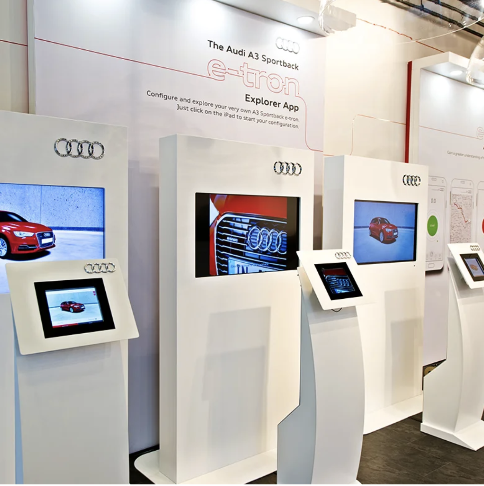
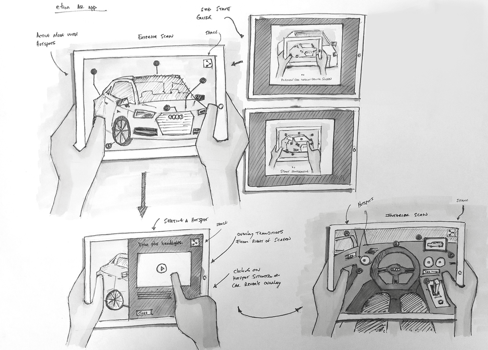
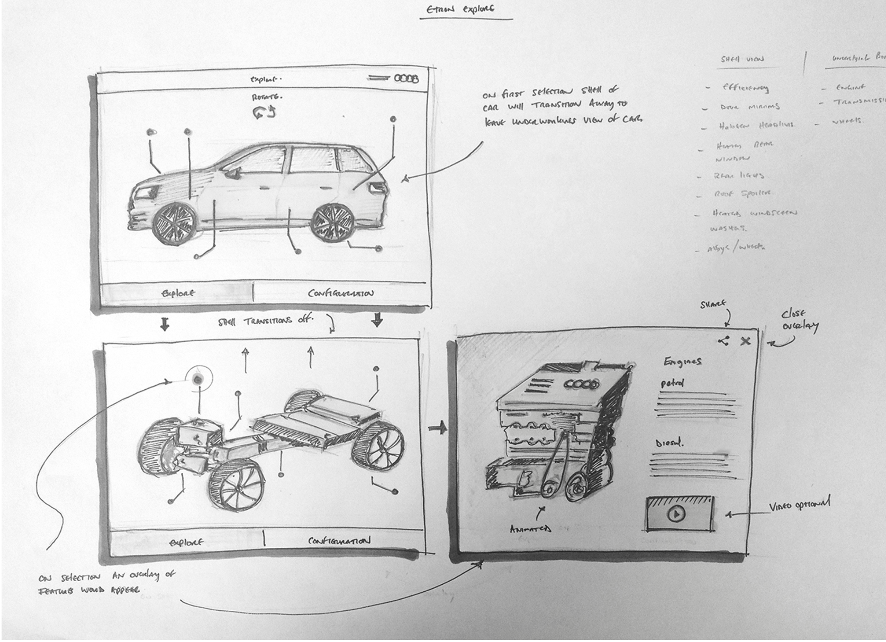
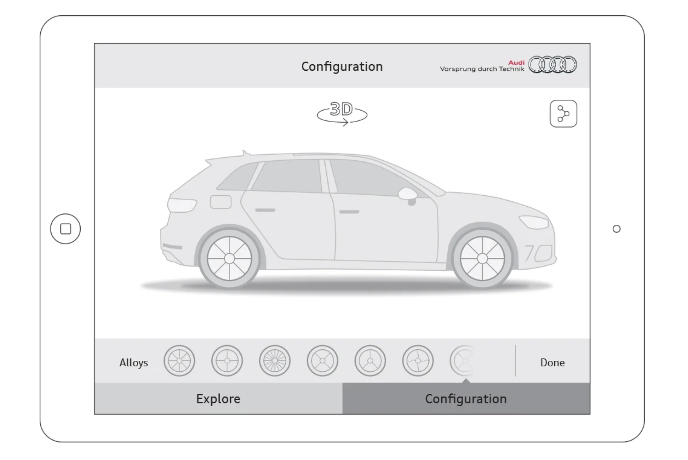
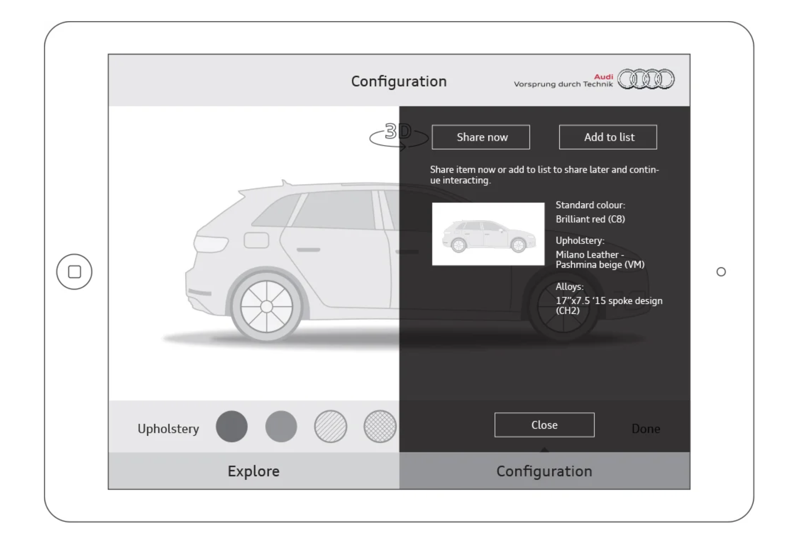
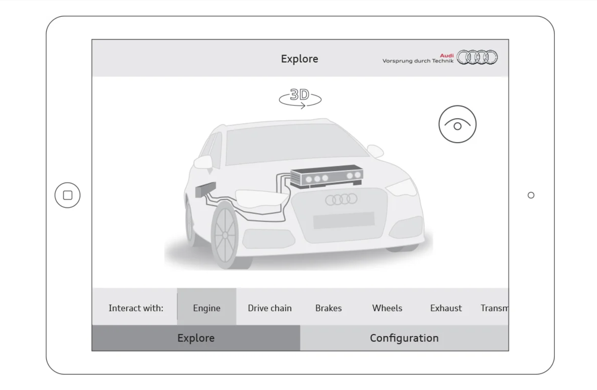
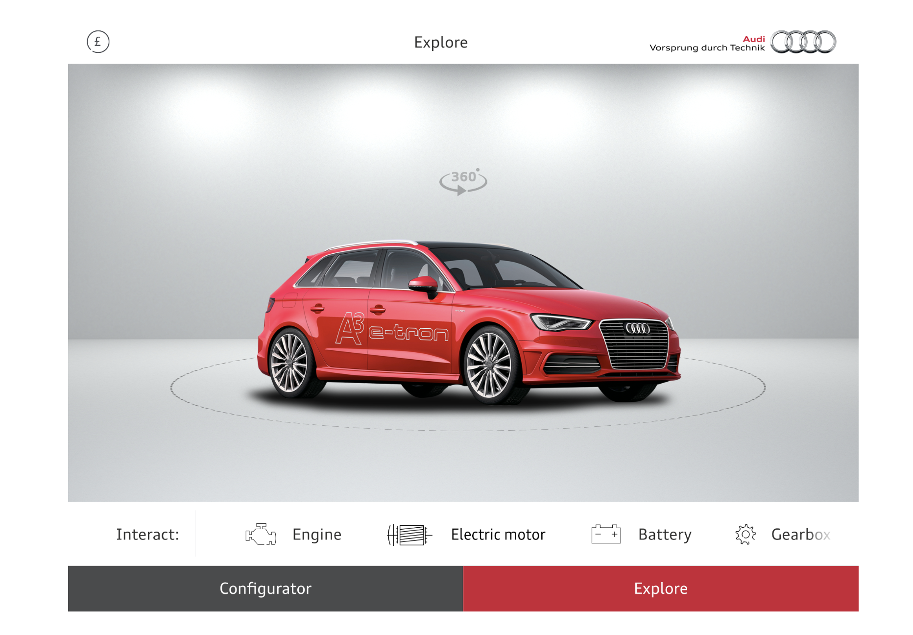
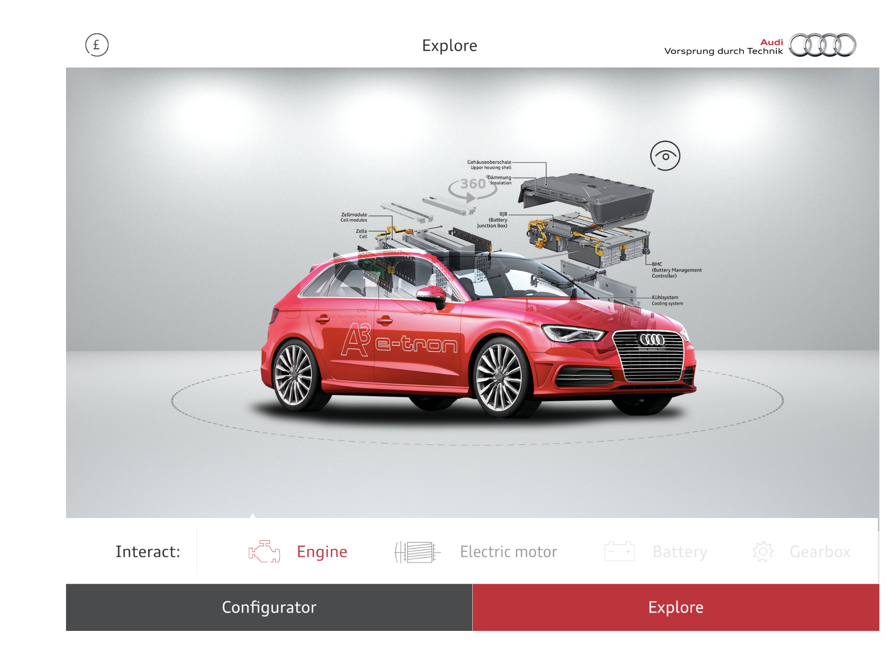
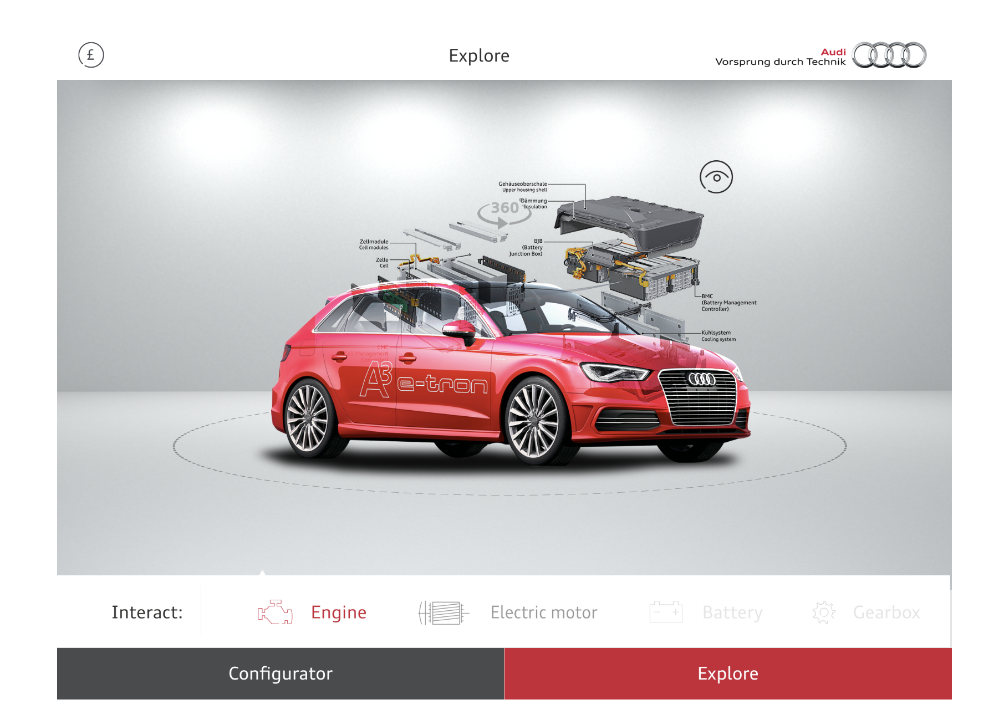
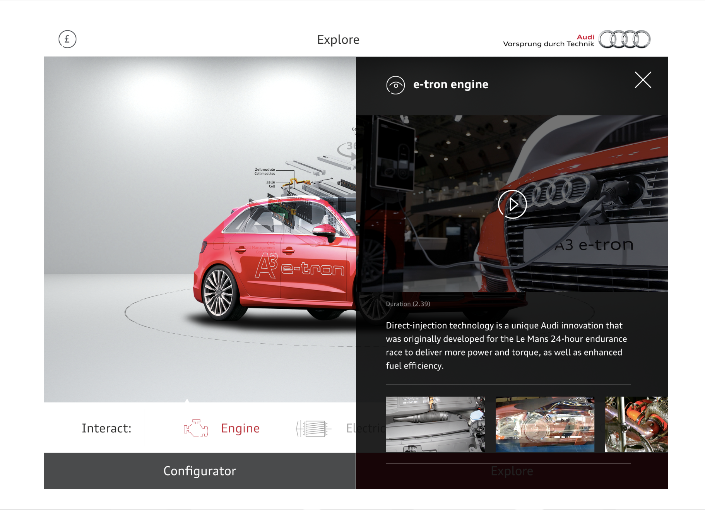

Audi e-tron Explorer
An iPad app built for Audi's pop-up experience at Westfield Stratford — letting customers explore and configure the A3 Sportback e-tron using 2D/3D augmented reality, with Apple AirPlay export to HD screens for group viewing.

An educational showroom — in an app.
Audi needed a premium, tactile experience for their e-tron pop-up at Westfield Stratford. Customers should be able to explore the A3 Sportback e-tron at their own pace — configuring it visually, understanding the technology under the surface, and sharing what they discovered. The app also needed a standby mode with a screensaver animation showcasing the vehicle's energy efficiency.

Pick your colour. See it change in real time.
The configuration section let customers personalise the A3 Sportback e-tron — selecting from a curated range of colours and alloy options. Every change updated the 3D render in real time, making the similarity between the e-tron and standard A3 Sportback immediately visible. The design kept the interaction simple: a premium showroom feel without the complexity of a full configurator.



Peel it back. See what's inside.
The explore section used augmented reality to let customers remove individual body panels from the 3D e-tron CAD model — revealing the powertrain, battery system, and hybrid components underneath. Supporting imagery, video, and contextual copy educated customers on each system. Social sharing was built in so customers could send content directly from the app.





"A showroom in your hands — premium, educational, and worth sharing."